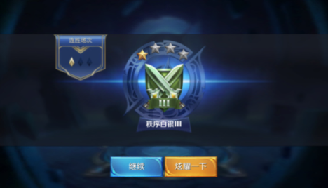
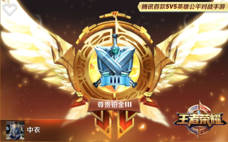

玩王者荣耀
1 回顾
1.1 我觉着这个游戏槽点很多
1.2 晋级白银分段！
青铜晋级白银的经验：
- 选典韦，砍砍砍，每局都拿MVP，很快就到白银了。

Figure 1: ./imgs/game-wang-zhe-rong-yao_20160605180002.png
1.3 晋级黄金分段！
白银晋级黄金的经验：
- 选安琪拉，烧烧烧，每局都拿MVP，很快就到黄金了。

Figure 2: ./imgs/game-wang-zhe-rong-yao_20160605175401.png
1.4 获得了花木兰、孙尚香、典韦、庄子、赵云等几个英雄
其中花木兰是花66元人民币买的，其他几个都是金币或钻石买的。买这些英雄的缘由是：
- 有一次周免用典韦打匹配，感觉这个英雄打击感做得非常好。买了他之后用来打排位，发现也很适合低分段的，虽然是战士，但是也能当半个T，穿一身防装也能有爆炸输出。不过需要把握好切入时机。
- 花木兰据说是Copy LOL里面的瑞文，这个英雄可操作的余地很大，在高段位是上分利器。
- 听说孙尚香是高分段少数几个幸存能玩的ADC，有个无解的位移技能。
- 庄子据说是个很强力的T。
Figure 3: ./imgs/game-wang-zhe-rong-yao_20160605175522.png
Figure 4: ./imgs/game-wang-zhe-rong-yao_20160605175541.png
Figure 5: ./imgs/game-wang-zhe-rong-yao_20160605175846.png
Figure 6: ./imgs/game-wang-zhe-rong-yao_20160605175758.png
Figure 7: ./imgs/game-wang-zhe-rong-yao_20160605175809.png
1.5 晋级白金分段！
经验：
- 黄金三升黄金二主要还是靠安琪拉，基本每局都能Carry。
- 黄金二升黄金一以及黄金一升白金再使用安琪拉就感觉有点无力，主要原因在于她推塔能力和机动性较弱。在几次反复掉分后，我决定不看阵容，秒选典韦，然后发现胜率高了不少。
- 黄金三和黄金二坑货很多，黄金一明显好点。
- 黄金一升白金的两场关键局里，遇到了两条大腿（孙悟空和宫本武藏），有惊无险地渡劫成功（渡劫是DOTA2术语）。
- 这个分段尽量不要选T，对我而言选T就相当于把命运交给别人了。

Figure 8: ./imgs/game-wang-zhe-rong-yao_20160605174711.png